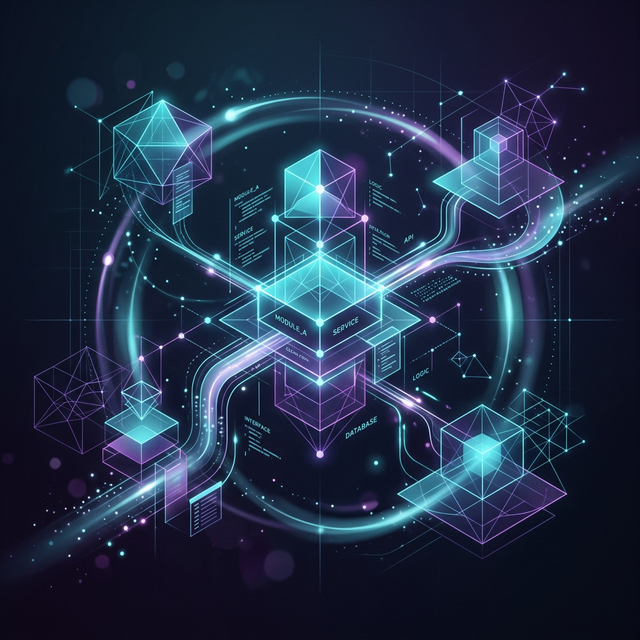

Published: Jan 12, 2026
Designing SaaS Architecture for 10x Growth
A practical framework for tenancy, billing models, and scaling boundaries.
Read MoreInsights on software architecture, delivery practices, and digital product growth.
Published: Jan 12, 2026
A practical framework for tenancy, billing models, and scaling boundaries.
Read MorePublished: Feb 03, 2026
Execution methods that keep quality high and release dates realistic.
Read More
Published: Feb 22, 2026
Common architecture decisions that improve resilience and observability.
Read MorePublished: Mar 01, 2026
Building transaction reliability for unstable network environments.
Read MorePublished: Mar 04, 2026
Tradeoffs and team fit considerations from real client implementations.
Read MorePublished: Mar 05, 2026
Right-sizing infrastructure while preserving product speed and uptime.
Read More